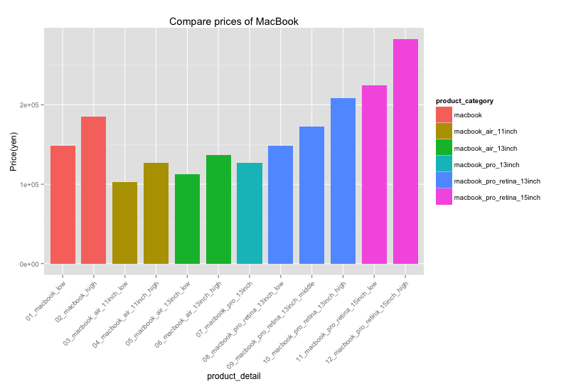
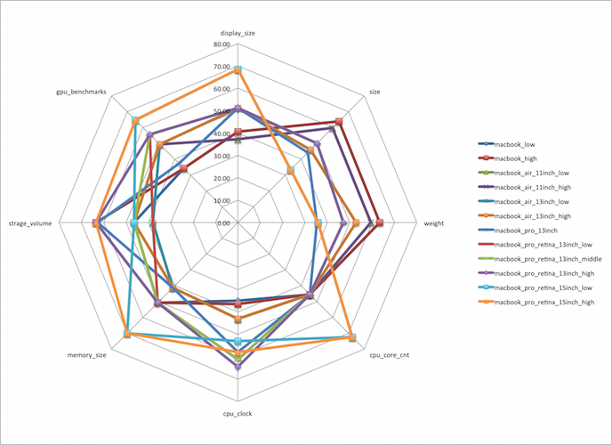
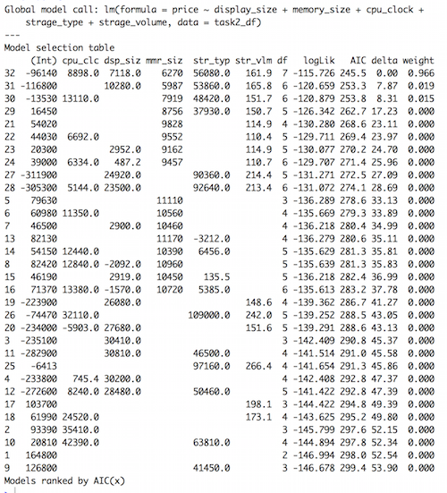
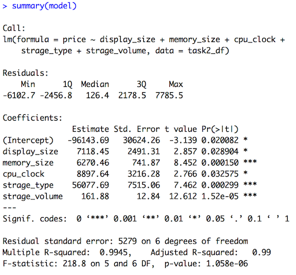

Mac製品のスペックと価格の比較とモデリング
Table of Contents
1 Mac製品のスペックと価格の比較とモデリング
1.1 要件確認
- 価格とスペックに関するグラフを作成。
- 製品ラインナップの間の違いがわかりやすいように価格についてのグラフを作成する。
- スペックについてもわかりやすくグラフにまとめる。
- MacBook製品の価格モデルを作成し、検証する。
1.2 解析結果
1.2.1 製品ラインナップの間の違いがわかりやすいように価格についてのグラフを作成する。
図-1

- グラフについて
- 縦軸:価格, 横軸:製品の種類
- 結果
- MacBookAir11inch, MacBookAir13inch, MacBookPro, MacBook, MacBookProRetinaの順番に価格が高くなっていると言える。
- 解析方法について
- データから価格と製品情報を抽出して、商品のタイプごとに並べた。
1.2.2 スペックについてもわかりやすくグラフにまとめる。
図-2

- グラフについて
- チャートの外側に向かうほど良い値となる(詳しくは補足参照)
- 結果
- グラフを参照
- 解析方法について
- 各データごとに標準偏差値を出し、それぞれの商品の偏差値を元にグラフを作成した(e.g. MacBookはより軽いので、平均より外側になっている)
- 数値出ないデータは、解析できる形に変換をした。(詳しくは補足参照)
1.2.3 MacBook製品の価格モデルを作成し、検証する。
表-1 : モデル式
| 変数名 | displaysize | memorysize | cpuclock | stragetype | stragevolume |
|---|---|---|---|---|---|
| Estimate | 7718.4 | 6270.5 | 8897.6 | 56077.7 | 161.9 |
| Pr | 0.029 | 0.000 | 0.032 | 0.000 | 0.000 |
表-2 : 式の評価
| AIC | 245.5 |
| weight | 0.966 |
- グラフについて
- 表-1はモデル式の係数についての重さ(Estimate)と、役に立っている変数かどうか(Pr)を表している。
- 表-2はモデル式のAICとweightを表している。(weight : これが大きいモデルの方が、より確からしいと言うことになる)
- 結果
- モデル式について、上記表-1のEstimateが式の係数(重さ)となる。
- 解析方法について
- データの整形後、AICを用いて重回帰分析を行った。
- 整形については、補足を参照。
1.3 補足
1.3.1 製品間の価格
ソースコード
library(ggplot2)
library(dplyr)
first_data <- read.csv(file = "./data/mac_price_150717.csv", fileEncoding = "utf-8")
df <- first_data %>%
select(product, price) %>%
filter(product == "macbook" | product =="macbook_air" | product == "macbook_pro")
# add product_detail and product_category to df
price_df<-transform(df,product_detail=c(
"01_macbook_low",
"02_macbook_high",
"03_macbook_air_11inch_low",
"04_macbook_air_11inch_high",
"05_macbook_air_13inch_low",
"06_macbook_air_13inch_high",
"07_macbook_pro_13inch",
"08_macbook_pro_retina_13inch_low",
"09_macbook_pro_retina_13inch_middle",
"10_macbook_pro_retina_13inch_high",
"11_macbook_pro_retina_15inch_low",
"12_macbook_pro_retina_15inch_high"
))
price_df<-transform(price_df,product_category=c(
"macbook",
"macbook",
"macbook_air_11inch",
"macbook_air_11inch",
"macbook_air_13inch",
"macbook_air_13inch",
"macbook_pro_13inch",
"macbook_pro_retina_13inch",
"macbook_pro_retina_13inch",
"macbook_pro_retina_13inch",
"macbook_pro_retina_15inch",
"macbook_pro_retina_15inch"
))
# ggplot create data frame
g <- ggplot(
price_df, # ggplot dataframe
aes ( # ggplot set option
x = product_detail,
y = price,
fill = product_category # color by product_category
)
)
# graph_design
g <- g + theme(axis.text.x = element_text(angle = 45, hjust = 1)) # setting angle of x-axis text
g <- g + geom_bar(
width = 0.8, # bar width
stat = "identity"
)
g <- g + xlab("product_detail") # name of x-axis
g <- g + ylab("Price(yen)") # name of y-axis
g <- g + ggtitle("Compare prices of MacBook") # name of graph
plot(g)
1.3.2 製品間のスペック
データを整形した後、偏差値に変換しレーダーチャートを作成した。
- データ整形箇所
- size = 高さ + 幅 + 奥行き
- gpubenchmark gpuの型を参考に、ベンチマークスコアに変換(映像処理能力)
- 補足
size, weight についてのみ、値が低いほど偏差値が高くなっている。
表-3 : データ
product displaysize size weight cpucorecnt cpuclock memorysize stragevolume gpubenchmark macbooklow 12 49.11 0.92 2 1.1 8 256 372 macbookhigh 12 49.11 0.92 2 1.2 8 512 372 macbookair11inchlow 11.6 50.9 1.08 2 1.6 4 128 778 macbookair11inchlow 11.6 50.9 1.08 2 1.6 4 256 778 macbookair13inchlow 13.3 56.9 1.35 2 1.6 4 128 778 macbookair11inchlow 13.3 56.9 1.35 2 1.6 4 256 778 macbookpro13inch 13.3 57.61 2.06 2 2.5 4 500 454 macbookproretina13inchlow 13.3 55.1 1.58 2 2.7 8 128 947 macbookproretina13inchmiddle 13.3 55.1 1.58 2 2.7 8 256 947 macbookproretina13inchhigh 13.3 55.1 1.58 2 2.9 8 512 947 macbookproretina15inchlow 15.4 62.4 2.04 4 2.2 16 256 1191 macbookproretina15inchhigh 15.4 62.4 2.04 4 2.5 16 512 1191 表-4 : 偏差値に変換後
product displaysize size weight cpucorecnt cpuclock memorysize stragevolume gpubenchmark macbooklow 40.53 63.85 63.44 45.53 34.89 50.80 46.53 34.20 macbookhigh 40.53 63.85 63.44 45.53 36.54 50.80 63.52 34.20 macbookair11inchlow 37.24 59.73 59.50 45.53 43.13 41.16 38.03 49.39 macbookair11inchlow 37.24 59.73 59.50 45.53 43.13 41.16 46.53 49.39 macbookair13inchlow 51.23 45.92 52.84 45.53 43.13 41.16 38.03 49.39 macbookair11inchlow 51.23 45.92 52.84 45.53 43.13 41.16 46.53 49.39 macbookpro13inch 51.23 44.28 35.32 45.53 57.97 41.16 62.72 37.27 macbookproretina13inchlow 51.23 50.06 47.16 45.53 61.26 50.80 38.03 55.71 macbookproretina13inchmiddle 51.23 50.06 47.16 45.53 61.26 50.80 46.53 55.71 macbookproretina13inchhigh 51.23 50.06 47.16 45.53 64.58 50.80 63.52 55.71 macbookproretina15inchlow 68.52 33.26 35.82 72.36 53.02 70.08 46.53 64.83 macbookproretina15inchhigh 68.52 33.26 35.82 72.36 57.97 70.08 63.52 64.83
1.3.3 Mac製品の価格モデル
- 整形について
- 数値はそのまま解析
- 数値で内値は、数値化できるならする
- gpuについて、ベンチマークサイトを参考にしベンチマークテストの結果に変更(macbookproretina15inchhigh については、値がないため、lowモデルの値を使用した。)
- 変更できないものは、より良い値を1、悪い値を0に変換をして用いた(e.g. 画面がretinaかどうか、ストレージのタイプはflashかどうか)
- 結果一覧
図-3 : AIC昇順
図-4 : モデル式のsummary
ソースコード
library(MuMIn) tmp_df <- first_data %>% select(product, price, display_type, display_size, memory_size, cpu_core_cnt, cpu_clock, strage_type, strage_volume) %>% filter(product == "macbook" | product =="macbook_air" | product == "macbook_pro") tmp_df$display_type <- ifelse(tmp_df$display_type=="retina", 1, 0) tmp_df$strage_type <- ifelse(tmp_df$strage_type=="flash", 1, 0) tmp_df <- transform(tmp_df,gpu_bentchmark=c( 372, 372, 778, 778, 778, 778, 454, 947, 947, 947, 1191, 1191 )) task2_df <- tmp_df ## modeling ##============================================ # model <- lm(price~display_type + display_size + memory_size + cpu_core_cnt + cpu_clock + strage_type + strage_volume + gpu_bentchmark, data=task2_df) # 上記データの結果から変数値を減らした model <- lm(price~display_size + memory_size + cpu_clock + strage_type + strage_volume, data=task2_df) summary(model) AIC(model) kekka.AIC<-dredge(model,rank="AIC") ans_model <- kekka.AIC[1] ans_model <- lm(price ~ display_size + memory_size + cpu_clock + strage_type + strage_volume, data = task2_df)